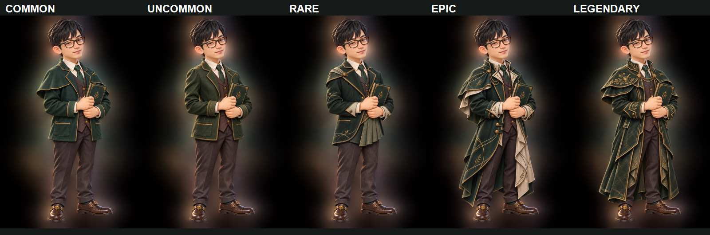
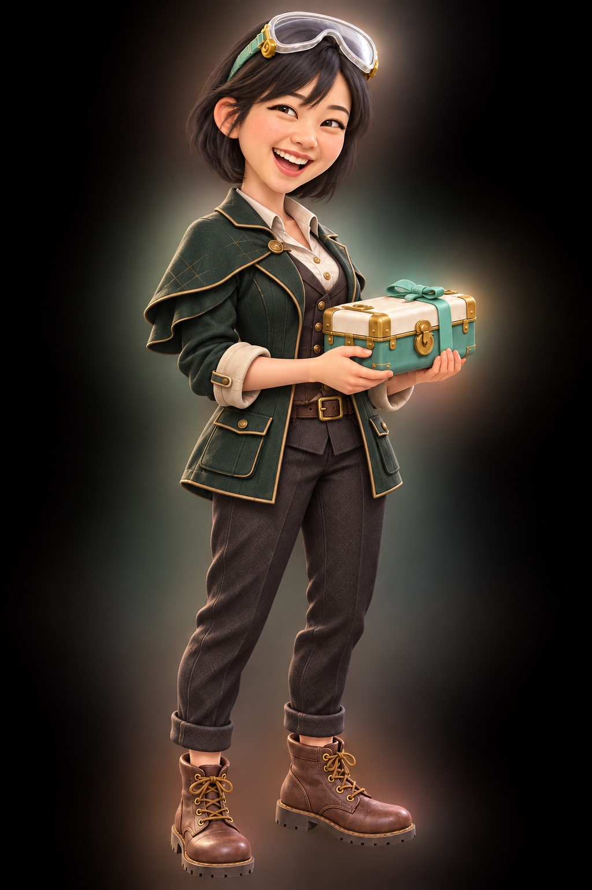
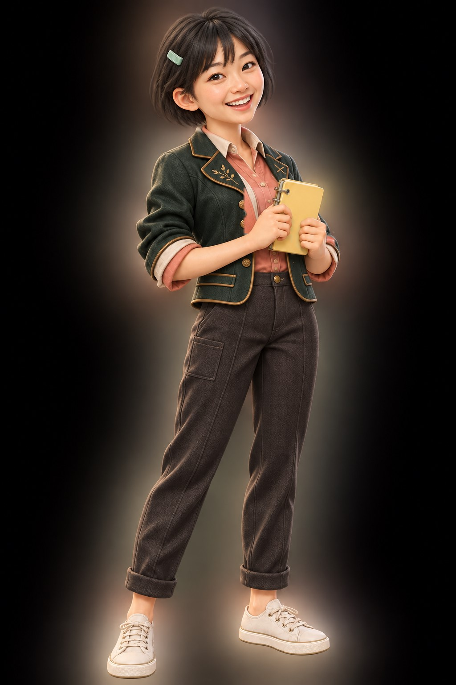
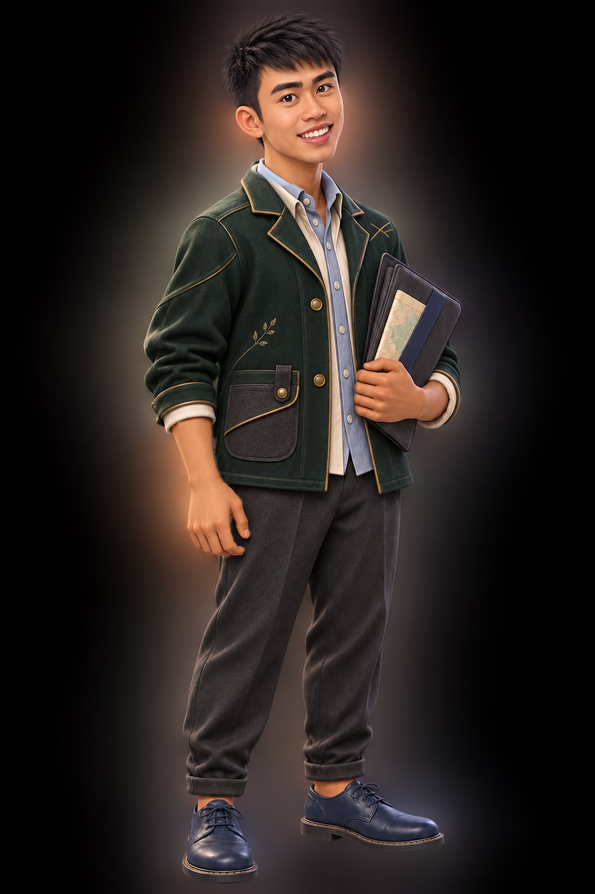

PHARMACY ACADEMY · ART IN PROGRESS
交線學院｜五品質與十位角色服裝進度
以原遊戲角色為基礎，為每人設計同系列、不同剪裁的服裝。點開圖片可看放大版本。
這是美術製作進度預覽。博士 COMMON 外套已有四方向 RUN8 的隔離透明分件候選；完整八欄、商城與場景穿戴尚未通過真實遊戲驗收，因此未放進正式遊戲。
星序博士｜五個品質的正面設計
普通、優良、稀有、史詩、傳說依序增加剪裁、布料層次與工藝。這些是原畫候選，尚未成為可穿脫或可跑動的遊戲裝備。

博士 COMMON 外套｜四方向 RUN8 候選
每張圖含八個原遊戲動作格。新外套已按各格原始透明遮罩取出；角色臉髮、手、褲子與鞋子使用原遊戲素材。這是隔離合成檢視，尚非真實遊戲畫面或商城成品。


下載透明外套、manifest 與檢查紀錄 ZIP（隔離試作，非已上線裝備）









預覽更新：2026-11-16，博士 COMMON 外套四方向 RUN8 候選與五品質正面候選。返回遊戲 · 查看進度紀錄